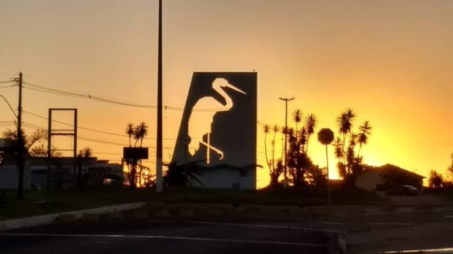

Página Inicial
Trabalho do Curso
Tiago dos Anjos de Oliveira
Bem-vindo à minha página acadêmica da disciplina WDD231 - Desenvolvimento Web Frontend I.
Neste espaço, apresentarei minhas atividades, projetos e conhecimentos adquiridos durante o curso.
Sou formado em Comunicação Social, com habilitação em Jornalismo, e atualmente curso Análise e Desenvolvimento de Sistemas na FATEC.
Também sou estudante de Engenharia de Software pela BYU-Pathway Worldwide.
Meu objetivo é aprimorar minhas habilidades em HTML, CSS e JavaScript, desenvolvendo páginas modernas, acessíveis e responsivas.
Garça, São Paulo

🌤️ Clima em Garça
Carregando...
💧 Umidade: --
💨 Vento: --
Certificado de Desenvolvimento Web e Computadores